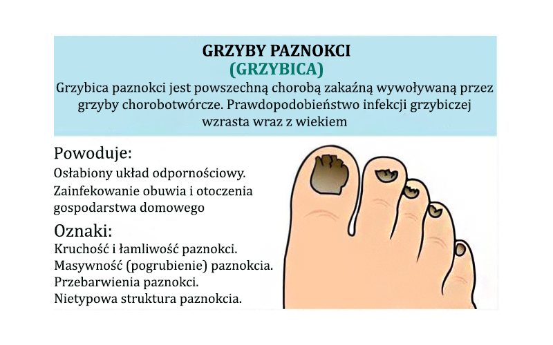
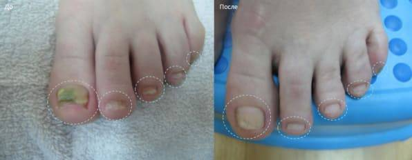

GŁÓWNY LEKARZ: „GRZYBY na paznokciach rozpoczynają proces martwicy paznokcia oraz jego nieprzyjemny zapach . ISTNIEJE SPOSÓB NA ZAPOBIEGANIE TYCH SKUTKÓW, ALE NIE JEST ON DLA WSZYSTKICH.”
Kazimiera Marek: „Gwarantuję, że każda osoba z grzybicą paznokci otrzyma spray, który zapobiega zakażeniom grzybiczym”.
Z konferencji prasowej naczelnego lekarza Kazimiery Marek: „Grzyby paznokci dostają się do krwiobiegu i do narządów wewnętrznych, rozpoczynając proces sepsy oraz wyniszcząc nasz organizm”.
Ekskluzywny wywiad z Mariuszem Polakiem, głównym lekarzem: „Dlaczego grzybica paznokci zabija i jak zapobiegać jej rozprzestrzenianiu się, jeśli paznokcie zaczynają już żółknąć?”
Redaktor: Dlaczego uważasz grzybicę paznokci za niebezpieczną chorobę?
Kazimiera Marek: Czy wiesz, ile osób zachorowało w 2020 roku na te przypadłość? W ciągu ostatniego roku ponad 15 000 osób zostało zarażonych sepsą. Z tego ponad 7000 przypadków jest spowodowane grzybicą paznokci. To więcej niż połowa. Grzyb na paznokciach dotyka nie tylko paznokci. Wnika do naszego krwiobiegu przez tkanki stopy i jest przenoszona przez ciało. Grzyb dosłownie niszczy ciało od środka, wywierając ogromny nacisk na wszystkie narządy. Jego zarodniki osadzają się w narządach wewnętrznych i zaczynają się tam stopniowo namnażać, powodując ich uszkodzenie. Rozpoczyna się wtedy proces grzybicy narządów wewnętrznych.
Oznacza to, że każda zarażona osoba jest w zasadzie zarażona od wewnątrz. W każdej chwili może zachorować na sepsę lub niewydolność nerek. Żadna osoba z grzybicą paznokci nie jest bezpieczna. Każde osłabienie układu odpornościowego spowodowane przeziębieniem, nadmiernym wysiłkiem w pracy lub stresem nerwowym może skutkować nieoczekiwanymi konsekwencjami.
Dlatego uważam grzybicę paznokci za niezwykle niebezpieczną chorobę, która obecnie jest jednym z liderów wśród wszystkich chorób w Polsce. Wszyscy słyszeli o raku i onkologii, ale spójrzmy prawdzie w oczy, 3-4% ludzi ma raka, a prawie każda osoba ma grzybicę paznokci po 40-45 roku życia.
Redaktor: Dlaczego lekarze nie radzą sobie z chorobą? Musisz ratować ludzi.
Kazimiera Marek: Po pierwsze, ludzie często po prostu nie chodzą do lekarza z grzybicą paznokci, żyjąc w przekonaniu, że nie jest to jakaś niebezpieczna choroba. A jeśli już, to dopiero wtedy, gdy poczują ból...na przykład, zaczynają się zewnętrzne problemy ze stopą lub palcami. Dadzą jakiś preparat, aby zmniejszyć ból i to wszystko. Ale aby usunąć grzyba, konieczne jest ciągłe zajmowanie się leczeniem. Ponadto niewiele osób rozumie konsekwencje infekcji grzybiczej i jej wpływu na narządy wewnętrzne.

Po drugie, w klinikach brakuje personelu. Ci młodzi ludzie nie mają wystarczającego doświadczenia na takie choroby.
"Redaktor: Okazuje się, że w kadrze pracowniczej jest duży problem. "
Kazimiera Marek: Nie tylko to jest problemem. Takie produkty są drogie, a nie wszyscy emeryci mogą sobie na nie pozwolić.
Wszystkie te czynniki dają następujący wynik. Ludzie nie są leczeni, przez co pogarsza się stan grzybicy paznokcia oraz zatrucia krwi narządów wewnętrznych. Oczywiście istnieją też prywatne przychodnie, ale wiadomo, że to kosztuje, wiele osób nie ma możliwości skorzystania z takich usług.
Redaktor: Co w takim razie powinny zrobić osoby, które mają grzybicę paznokci?
Kazimiera Marek: Oczywiście, to też nie jest tak, że my siedzimy bezczynnie. Ale problem z personelem nie zostanie natychmiast rozwiązany. Wszystko zależy od pracy uczelni medycznych. Nie jestem w stanie sam wyszkolić nowych lekarzy. Dlatego nie należy oczekiwać szybkiego rozwiązania co do tego problemu. Co więcej, taka sytuacja występuje nie tylko w naszym kraju. Komunikuję się z kolegami z innych regionów i prawie wszędzie jest taka sama sytuacja.
Udało mi się osiągnąć zastosowanie nowego produktu, który całkowicie rozwiąże grzybicę paznokci i usunie je z organizmu. Program zostanie w pełni uruchomiony już za miesiąc, ale już teraz wszyscy potrzebujący mogą go otrzymać z 50% zniżką.
Redaktor: Dlaczego uważasz, że to zmieni sytuację?
Kazimiera Marek: Ten produkt całkowicie rozwiązuje problem z grzybicą paznokci, eliminując oba jej zewnętrzne czynniki i całkowicie oczyszczając organizm. Od pierwszych dni stosowania sprayu zagrożenie życia zmagających się z tym problemem zostało całkowicie zniwelowane. Wystarczy, że osoba po prostu zacznie używać sprayu i już opuści strefę ryzyka. Krew i narządy wewnętrzne zostają oczyszczone, procesy martwicy i posocznicy zostają zatrzymane, a grzyby znajdujące się wewnątrz organizmu całkowicie zniszczone.
Moim zdaniem spray uratuje dziesiątki tysięcy istnień ludzkich. Więc walczyłem o niego najlepiej jak potrafiłem.
Redaktor: Jak wygląda ten spray? Jaki jest sekret jego skuteczności?
Kazimiera Marek: To jeden z najnowszych sprayów, które miałem możliwość przetestować. W przeciwieństwie do wielu innych środków nie został stworzony przez komercyjną firmę farmaceutyczną. W tworzeniu produktu zaangażowana była grupa najlepszych lekarzy i specjalistów naukowych z całego świata.
Sekret jego efektywności tkwi skutecznym działaniu na komórki organizmu. Jedynym powodem żywotności grzybicy paznokci jest trudność w całkowitym usunięciu jej. Zwykle pozostaje gdzieś na stopie lub na narządach wewnętrznych, powracając ponownie po zakończonej kuracji. Jednocześnie układ odpornościowy organizmu nie jest w stanie sam sobie z tym poradzić. Ten niesamowity produkt jest w stanie zahamować całkowicie rozwoj infekcji grzybiczej. Natomiast należy pamiętać, że każde osłabienie układu odpornościowego prowadzi do szybkiego rozwoju grzybów w naszym organiźmie, i nagłej śmierci.
tworzy w tkankach specjalne przeciwciała, które działają na grzyba i niszczą go w całym ciele. Dzięki temu organizm człowieka zostaje całkowicie oczyszczony z grzybów i toksyn. Dodatkowo stymuluje produkcję przeciwciał. Stosowanie tego produktu pozwala zwiększyć odporność organizmu na grzyby. Nie ma opcji, że zostaniesz ponownie zarażony... w pierwszym zetknięciu z płytką paznokcia całkowicie oczyszcza organizm z infekcji grzybiczych, zapobiegając wszelkim niechcianym powikłaniom.
Spray świetnie oddziałuje na organizm:
- Dezynfekuje i niszczy strukturę infekcji grzybiczej
- Zapobiega rozmnażaniu i rozwojowi patogennej mikroflory
- Normalizuje funkcjonowanie układu odpornościowego, pomaga w leczeniu przewlekłych chorób grzybiczych,
- Oczyszcza krew i limfę
- Zapobiega dysfunkcji tarczycy
- Przywraca funkcję wątroby i nerek
- Wspomaga odporność i zapobiega zaburzeniom układu odpornościowego
Ważne! WAŻNE! W WYNIKU BADANIA ZOSTAŁO STWIERDZONE, ŻE avgust I septembar TO NAJLEPSZY CZAS NA ROZPOCZĘCIE KURACJI. DZIĘKI STABILIZACJI ŚREDNIEJ TEMPERATURY NASTĘPUJĄ PROCESY WYMIANY W ORGANIZMIE, A WPŁYW ŚRODKA ZWIĘKSZA SIĘ. SKUTECZNOŚĆ KURACJI NASTĘPUJE O 37% SZYBCIEJ NIŻ W INNYCH PORACH ROKU
Reporter: Czy istnieją przeciwwskazania?
Kazimiera Marek: Nie ma żadnych przeciwwskazań. składa się wyłącznie z naturalnych składników, które nie wywołują reakcji alergicznych! Może być stosowany nawet w przypadku uczulenia na jakikolwiek inny produkt. Jest całkowicie bezpieczny dla wątroby, która zwykle bardzo cierpi.
Spray został stworzony przez instytut zdrowia. Produkcja odbywa się w profesjonalnym laboratorium i zaczyna się rozwijać. Dlatego spray jest sprzedawany tylko w ramach specjalnych programów. Oczywiście, gdyby firma farmaceutyczna była właścicielem u, to byłby sprzedawany za duże pieniądze. Ale w tym przypadku cena jest z rabatem 50%..
Spray miał być dostępny dopiero za 6 miesiący, ale udało mi się porozumieć z producentem. W rezultacie, w tej chwili można otrzymać z 50% zniżką i raz na zawsze pozbyć się problemu z grzybem.
Reporter: W jaki sposób można zdobyć ?
Kazimiera Marek: wysyłanu jest bezpośrednio z magazynu i dostarczany za pośrednictwem firmy kurierskiej. Procedura jest bardzo prosta - zostaw swoje zgłoszenie z imieniem i nazwiskiem oraz numerem telefonu. Następnie poczekaj cierpliwe na telefon ze strony specjalisty, a by domówić szczegóły związane z zamówieniem.
Warunki 50% rabatu.
- сsobistego
Konieczne jest, aby walczyć z oszustami, którzy próbują masowo wykupić i sprzedawać go na własną rękę. - Aplikuj przez oficjalną stronę internetową.
Oficjalna strona internetowa to gwarancja producenta i ochrona przed oszustami
Reporter: Dziękiuje za rozmowę! Mam nadzieję, że kiedy nasi czytelnicy dowiedzą się o tym produkcie, na pewno użyją go, aby pozbyć sie problemu z grzybicą!
DODANE 12 GODZ. TEMU | UWAGA REDAKCYJNA
Ważne wiadomości! Obecnie program trwa tylko do
roku. Do końca trwania promocji oryginalny produkt można otrzymać ze zniżką 50% poprzez wypełnienie OFICJALNEGO FORMULARZU!!
Pozostało
paczek:
6 szt.
Reporter: Jeszcze raz dziękuję. Do następnego razu!
Jestem bardzo wdzięczna za informację o tym produkcie. Długo szukałam czegoś takiego, a teraz jest jeszcze na to zniżka! Nie mogę się doczekać aż to do mnie przyjdzie! Dziękuję!
Popieram! to bardzo skuteczny spray na problemy z grzybicą paznokci! Po stosowaniu grzyb zniknął, z powierzchni moich paznokci, i w ogóle nie ma po nim śladu. Półtora miesiąca temu, zostawiłem zgłoszenie na oficjalnej stronie producenta, otrzymałem ją w przeciągu 3 dni. Dzięki! Efekt wart każdej ceny!
Nie martw się i dalej smaruj. Najważniejsze, aby zrobić wszystko zgodnie z instrukcjami. Mnie ten produkt uratował :)
Ludzie, pomóżcie! Mam już dość grzybicy paznokci. Po prostu nie wiem już, co mam robić. Czasami używam różnych środków, ale one nie pomagają.
Zamów teraz na stronie producenta a, nie pożałujesz. Mieliśmy z żoną straszny problem z grzybicą. Dziękuję mojej mamie za znalezienie tego artykułu i zmuszenie mnie do złożenia zamówienia. Teraz nie mam śladów po grzybie i mogę normalnie chodzić. Uwierz mi, zamów i wszystko się ułoży, zobaczysz :)
Musisz wejść na oficjalną stronę u, tu masz link na stronie. Możesz zamówic teraz z 50 % zniżką. Polecam! I produkt bardzo pomógł!
Ludzie którzy już to zamowili, ile dni trwa dostawa?
Cześć, zamówiłem też na stronie producenta, niestety wtedy nie było tej promocji. Zapłaciłem pełną cenę, ale totalnie nie żałuję. Grzyb dosłownie zniknął w ciągu tygodnia i nie powrócił przez ponad pół roku. Dostawa była w ciągu 3 dni.
Czy ten spray jest naprawdę tak skuteczny!? Wtedy też bym zamawiła.
Opowiem wam moją historię, miałem podobny przypadek jak większość z Was.Pojawił się u mnie grzyb. Zacząłem szukać sposobów na rozwiązanie tego problemu. Potem dotarłem do tego artykułu, i postanowiłem zamówić . Paczka dotarła w ciągu 3 dni, i od razu zacząłem stosowanie preperatu. Po 20 dniach stosowania miałem niesamowite efekty. Grzyb całkowicie zniknął. Zamów , a nie pożałujesz!
Widzę, że sam nie miałem takich problemów, dzięki Bogu ... A wpadł mi od razu w oko, i uratował mnie przed uporczywym grzybem! Dobrze, że kiedyś trafiłem na stronę producenta i złozyłem zainteresowanie, wtedy niestety nie było zniżki, ale i tak nie żałuje wydanych pięniędzy! Najlepsza inwestycja :)
Czy to jest naprawde aż tak skuteczne|?? Stosowałam już tyle produktów i nic...
Dziękuję, bardzo mi pomógł :) Zamówiłem go również na oficjalnej stronie producenta! Nie zwlekaj z rozwiązaniem tego problemu, lepiej działać już i nie wstydzić się więcej swoich stópek
Wynik po prostu przerósł moje oczekiwania. Grzybica zniknęła ze wszystkich palców w ciągu 20 dnii! Zamówiłem jeszcze kilkaopakowań dla moich znajomych... mają te same problemy....
Dzisiaj złozyłam zamówienie, trzymajcie za mnie kciuki!
Dają spray z 50% rabatem! Lepiej
się pospiesz!
Zostawiłam swój numer telefonu na oficjalnej stronie
internetowej, a oni bardzo szybko do mnie
zadzwonili a zamówienie zostało potwierdzone.
Chcę ładnie wyglądać i nie wstydzić się
już nosić odkrytych butów
Natknąłem się na ten artykuł przypadkiem. A co ja widzę !! Mówią o ie. Jakiś czas temu kupiłam ten preparat dla męża...to było najlepsze co mogłam zrobić, aby pomóc mu w walce z grzybica! Krótko mówiąc, czytałam też oczywiście recenzje, obserwowałam co mówią ludzie i w końcu zamówiłam, bo mój mąż był już zdesperowany. Stosował pigułki i próbował leczyć grzyba według ludowych przepisów, miał nawet problemy z żołądkiem przez te tableteki..Po dosłownie 20 dniach kuracji, w końcu zbaczył na swoich stopach pierwsze rezultaty. Dziekuję bardzo Wam za ten produkt, a artykuł niesamowity! Myśle, ze pomoże wielu osobom :)
Wow super, ze teraz jest ta 50% zniżka, pd razu zamówiła ten produkt :)
Od kilku lat na próżno staram się rozwiązać problem z grzybem. Postanowiłem spróbować u, o którym mówił tutaj specjlalista, a grzyb zniknął w 4 tygodnie. Teraz paznokcie są jak nowe.To jest takie ułatwienie, że producent przyjmuje zgłoszenia przez specjalną stronę internetową, Nigdzie nie trzeba jechać!

Powtórzę jeszcze raz, dla tych, którzy nie zrozumieli, co zostało napisane w artykule: można zamówić z rabatem tylko na oficjalnej stronie producenta, wystarczy kliknąć w link! - Spray sprzedawany jest z rabatem, według specjalnego programu, ale nie trwa to długo, musisz się pospieszyć!